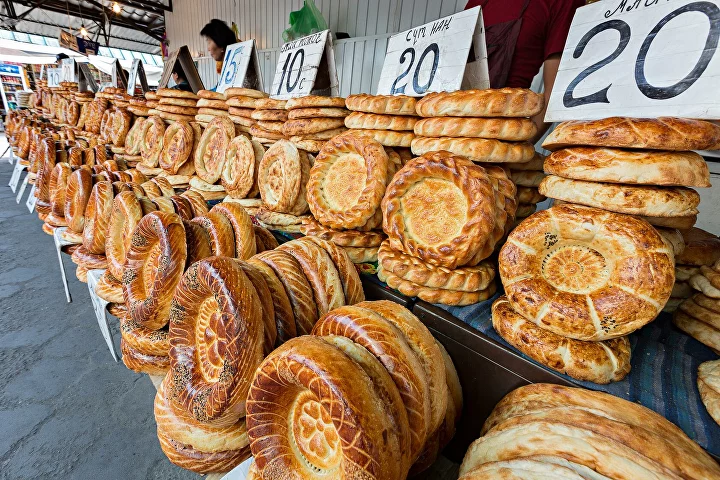

Embark on a flavorful journey through Bishkek, visiting three authentic restaurants celebrated for their excellent Kyrgyz cuisine. This is not just a meal — it is a deep cultural dive into the traditions and flavours that define Central Asian life.
Your English-speaking guide will share the stories behind each dish: the history of beshbarmak, the significance of kumiss, the art of manti preparation. You'll eat where locals eat, away from tourist traps.
From the sizzling heat of freshly baked samsa to the subtle notes of a traditional Kyrgyz soup, every bite is a window into the nation's soul. Perfect for food lovers and curious travellers.
Fill out the form and we'll confirm within 24 hours